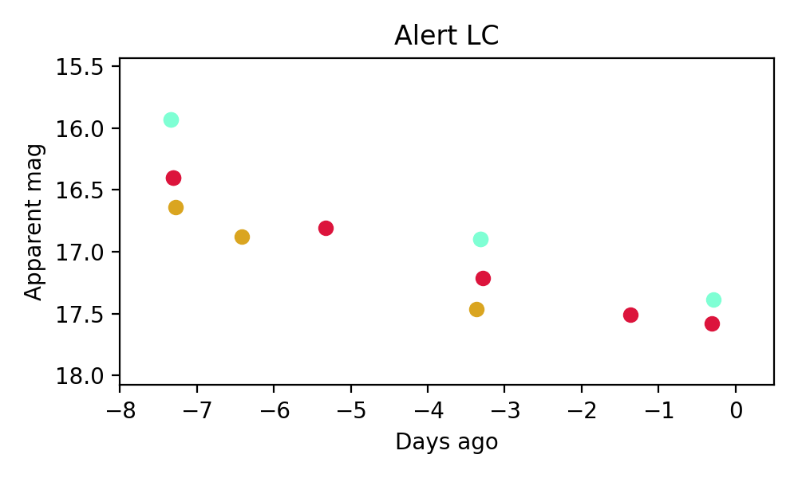
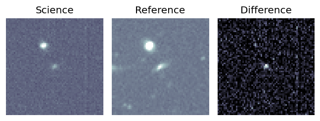
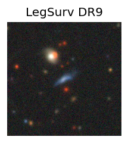
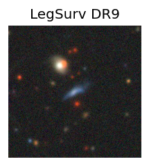
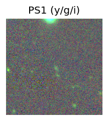
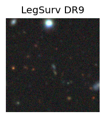
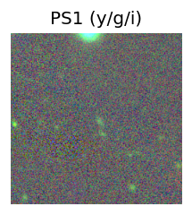
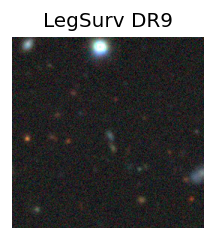
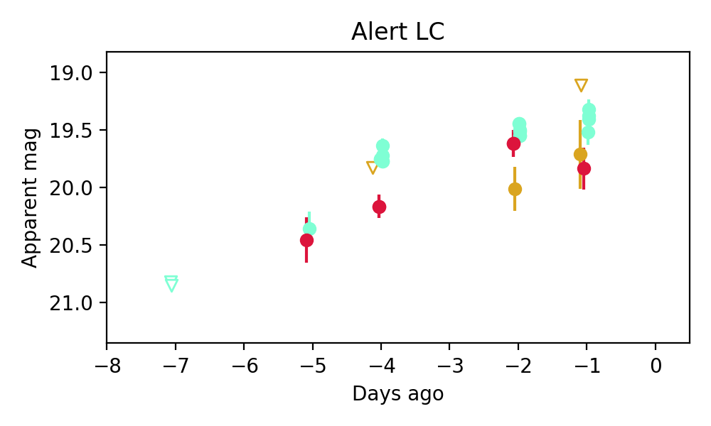

Candidate List 20250808Previous Day Next Day
Section 1: New Sources (age<1d) Section 2: Old (1-5d) sources observed last nightplaceholder
Section 1: New Afterglow/FBOT Cands Last Night (0)
Section 2: Older Sources Observed Last Night (3)
0. ZTF25abgkgdu (Afterglow?) [Back to Top] [Share] [Trigger Swift] [Fritz] [Lasair]RA, Dec: 338.58996, 11.97842 22h34m21.59s, 11d58m42.29sGalactic (l, b): 78.06188, -38.66997 ext(g-r) = 0.053


PS1: 0 sources in 3 arcsec
LegacySurvey: 1 sources in 3 arcsec Closest: d = 0.02 arcsec, 132.2 deg (east of north) photoz=1.04 (68% bounds 0.56, 1.73), type=PSF peak abs mag = -28.33 (68% bounds -26.68, -29.69)

Extinction-corrected gr color:
From alerts: -0.24 +/- 0.07 mag
Extinction-corrected gi color:
From alerts: -0.64 +/- 0.02 mag
Extinction-corrected ri color:
From alerts: -0.28 +/- 0.02 mag
Rise Rate:
g: 1.76 mag/day
r: -99 mag/day
i: 0.53 mag/day
Fade Rate:
g: 0.24 mag/day
r: 0.18 mag/day
i: 0.21 mag/day
1. ZTF25abhjxpt (FBOT?) [Back to Top] [Share] [Trigger Swift] [Fritz] [Lasair]RA, Dec: 29.54021, 7.11726 1h58m9.65s, 7d 7m2.13sGalactic (l, b): 150.5805, -52.1361 WARNING: -4.64 deg from ecliptic plane ext(g-r) = 0.062 

SDSS (10 arcsec):Found SDSS phot-z: z=0.72; peak abs mag = -24.13
PS1: 0 sources in 3 arcsec
LegacySurvey: 1 sources in 3 arcsec Closest: d = 0.30 arcsec, 159.3 deg (east of north) photoz=0.07 (68% bounds 0.04, 0.1), type=SER peak abs mag = -18.22 (68% bounds -17.19, -18.98)

Extinction-corrected gr color:
From alerts: -0.36 +/- 0.27 mag
Extinction-corrected gi color:
From alerts: 0.02 +/- 99 mag
Extinction-corrected ri color:
From alerts: 0.37 +/- 99 mag
Rise Rate:
g: 0.31 mag/day
r: 0.25 mag/day
i: -99 mag/day
Fade Rate:
g: -99 mag/day
r: -99 mag/day
i: -99 mag/day
2. ZTF25abhkfkq (FBOT?) [Back to Top] [Share] [Trigger Swift] [Fritz] [Lasair]RA, Dec: 31.21657, 8.48767 2h 4m51.98s, 8d29m15.60sGalactic (l, b): 152.04222, -50.18764 WARNING: -3.93 deg from ecliptic plane ext(g-r) = 0.084 

SDSS (10 arcsec):Found SDSS phot-z: z=0.42; peak abs mag = -22.81
PS1: 0 sources in 3 arcsec
LegacySurvey: 1 sources in 3 arcsec Closest: d = 1.58 arcsec, 210.3 deg (east of north) photoz=0.19 (68% bounds 0.14, 0.25), type=EXP peak abs mag = -20.63 (68% bounds -19.87, -21.28)

Extinction-corrected gr color:
From alerts: -0.53 +/- 0.19 mag
Extinction-corrected gi color:
From alerts: -0.45 +/- 0.31 mag
Extinction-corrected ri color:
From alerts: 0.08 +/- 0.35 mag
Consistent with synchrotron, g-r>0!
Rise Rate:
g: 0.13 mag/day
r: 0.22 mag/day
i: 0.1 mag/day
Fade Rate:
g: -99 mag/day
r: -99 mag/day
i: -99 mag/day